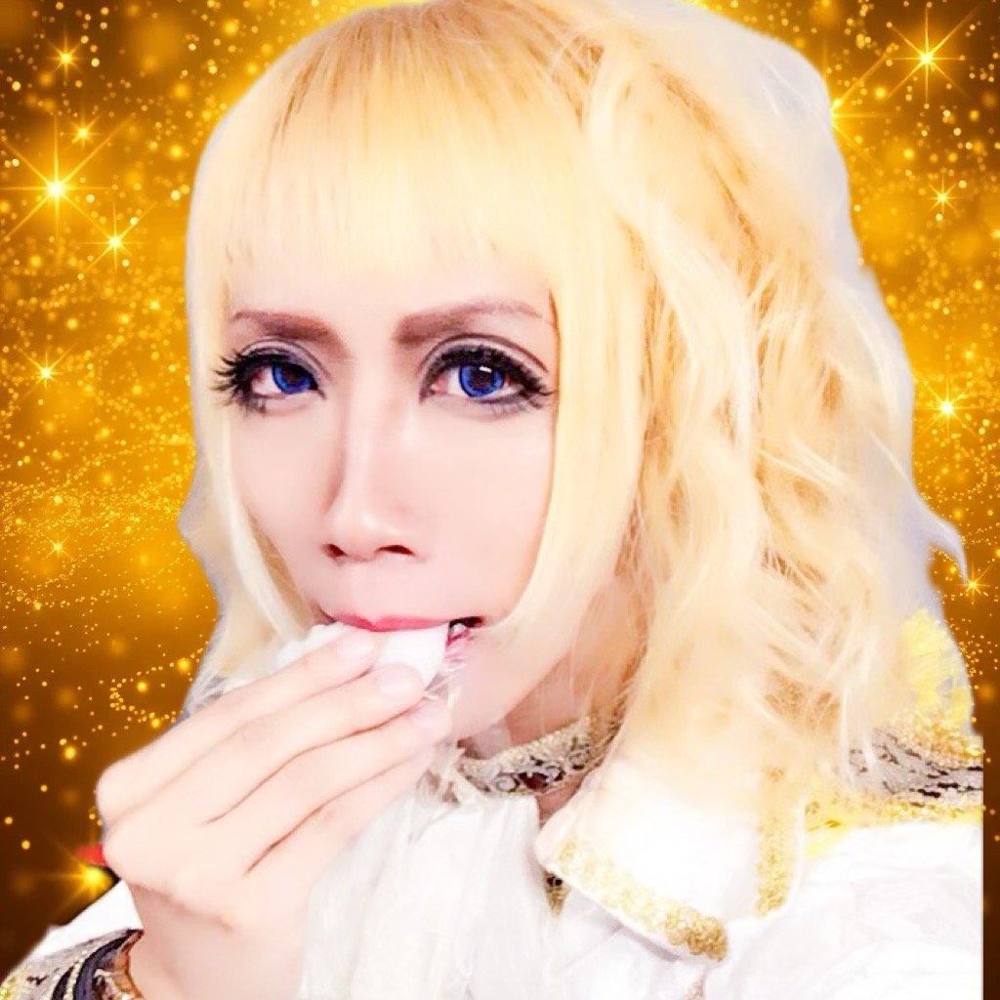

Rhyn皇太子
別名義: 明空凛
歌と、言葉と、真理の探求者。
Information & Events
6.19 (木)
名古屋 HeartFM「HEARTFUL SHUFFLE」（14:00〜）ゲスト出演
7.12 (土)
HR/HM FESTIVAL SHOCK WAVE VOL.3 @ ColorSing
8.31 (日)
音楽ライブ @ 名古屋
9.27-28 (土日)
スピリチュアルフェスにヒーラーとして出店予定 @ 愛知県内
毎日、生放送。
私の「今」に触れるなら、まずはこちらへ。
歌と、笑いあふれる楽しいトークでお出迎えします。
| 月 | 火 | 水 | 木 | 金 | 土 | 日 |
|---|---|---|---|---|---|---|
| 20:00~ | 20:00~ | 18:00~ | 18:00~ | 20:00~ | ゲリラ | 18:00~ |
※時々23時よりトーク配信あり。予定はX(Twitter)で告知します。
Links
Media
黒薔薇王国 2017.05.14 @ Kawasaki CLUB CITTA', Kanagawa
黒薔薇王国 / Black Roses
黒薔薇王国 / 風 吹く限り
私という存在について
表の顔は、ボーカリストとして音の世界を探求するミュージシャン。
その傍ら、言葉の世界では作家として物語を紡ぎ、ロジックの世界ではゲーム開発者としてシステムを構築し、そして身体の世界では武術気功研究家として、そのメカニズムを解明してきました。
これら全ての活動は、たった一つの問いに収束します。
『この世界の"真理"とは、一体何か？』
その長年の個人的な探求の成果を、オンラインサロン『解脱しか勝たん！』にて主催するに至りました。
私の探求の旅は、決して他者を論破したり、自らの正しさを証明したりするためのものではありません。
むしろ、難解な真理や、一見すると奇妙な現象も、笑いと共に解き明かすことで、誰もが対等に、そして軽やかに、自らの可能性に向き合える世界。
それこそが、私の目指す「革命」の姿です。
【活動領域】
ボーカリスト / ミュージシャン / 作詞作曲家 / 小説家 / 武術気功研究家 / ライバー / ゲーム開発 / デジタル空間創造 / 真理探求 / 慶應義塾大学哲学徒
※別名義：明空凛としても活動